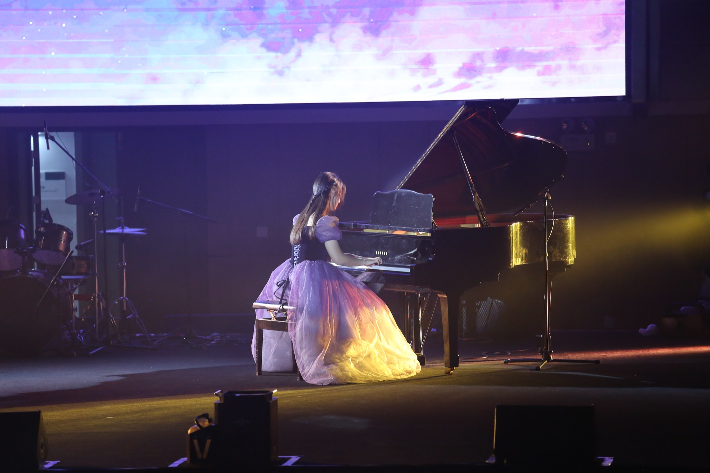

About关于

你好，我是 Celine。这里是我的视觉档案：练琴时的专注、跳舞时出的汗、清晨水面上的桨、烤箱前的等待，以及所有和朋友们一起做过的事情。
我不太会写很长的文字，所以用照片和视频来记。每一张都标了日期和属于它的分类，方便以后回头看看，自己是怎么一点点变成现在的样子的。
如果这里的某一张图让你想起了什么，欢迎写信给我。
ENGLISH
Hi, I'm Celine. This is my visual archive — the focus of practice, the noise of a rehearsal room, the sweat of dancing, the oars on an early morning lake, and everything I made with friends.
I'm not much of a writer, so I keep my notes in pictures. Each one carries a date and a category, so that one day I can look back and see how I slowly became who I am.
If something here reminds you of your own days, I'd love to hear from you.
How this site works
The whole site is static — plain HTML and CSS on GitHub Pages, no framework and nothing to install.
Photos are resized into three sizes locally with the sips tool that ships with macOS. Videos are re-encoded to web-friendly MP4 with ffmpeg. Then everything is published in one go through the GitHub API.
To add new material I just drop the files into the matching folder and run one command.